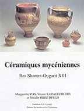

M. Yon, V. Karageorghis and N. Hirschfeld
Céramiques myceniénnes de Ras Shamra-Ougarit XIII
Editions Recherche sur les Civilisations: Paris, 2000
 |
Les fouilles menées depuis 1929 par la mission française de Ras Shamra-Ougarit sur la côte de Syrie, et qui se poursuivent à ce jour, ont livre une quantité considérable de céramique de type mycénien, qui constitue dans la dernière phase de l'Age du Bronze un des fossiles directeurs les plus significatifs. Les objets mycéniens d'Ougarit déjà publiés representaient la proportion la plus importante du repertoire connu à travers tout le Proche-Orient; mais une partie restait inédite, comprenant notamment des échantillons d'étude rapportés au Louvre et les découvertes des campagnes récentes. Le présent volume fait connaître près de quatre cents nouveaux documents, que l'on a tenté de replacer dans leur contexte archéologique, et qui bénéficient des travaux les plus récents sur cette céramique et sa diffusion dans l'antiquité. Marguerite YON, qui a poursuivi des recherches sur la céramique antique, Directeur de Recherche au CNRS (Maison de l'Orient, Lyon), fouilleur de Salamine (site de la ville) et des sanctuaires phéniciens et du port de guerre de Kition Bamboula (Larnaca) a Chypre, a dirigé de 1978 à 1998 la mission française de Ras Shamra-Ougarit (Syrie). Vassos KARAGEORGHIS, dont les travaux sur la céramique mycénienne font autorité, Directeur des Antiquités de Chypre (1963-1989), puis Professeur d'Archéologie a l'Université de Chypre (1992-1996), a fouillé en particulier la nécropole royale de Salamine et le quartier des temples du Bronze Récent et phéniciens de Kition-Kathari (Larnaca) a Chypre. Nicolle HIRSCHFELD, Professeur a I'Université du Texas à Austin et candidate au doctorat, a mené des travaux importants sur la céramique mycénienne trouvée en Égée, en Turquie (épave d'Uluburun), à Chypre, en Syrie et sur la côte du Levant, en Égypte, en même temps que des recherches sur le commerce de l'Age du Bronze Récent en Méditerranée orientale. Copies may be ordered by contacting: |
| Back to Publications | Table of Contents |